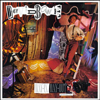
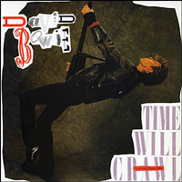
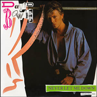

1987 - NEVER LET ME DOWN
The circus-style set (with surreal interpolations of a skyscraper and a digitally hand-drawn ladder) that served as a backdrop for the Never Let Me Down artwork wasn't a million miles away from the prop-heavy stage design Bowie would take on his Glass Spider tour, staged in support of the album. He later called the title of his 17th record "pompous", but added: "in the context of the song, and songs on the album, I think it's rather tongue-in-cheek to use it as the title". Noting there was also "a vaudevillian thing about the cover", Bowie felt the title and artwork combined were "kind of comical"
Photographer: Greg Gorman | Designer: Mick Haggarty
DAY-IN DAY-OUT
(Day in) Day in
(Day out) Day out
(Stay in) Stay in
(Fade out) Fade out
(Day in) Hoo hoo
(Day out) Oh hoo hoo
She was born in a handbag
Love left
On a doorstep
What she lacks is a backup
Nothing seems to make a dent
Going to find her some money, honey
Try to pay her rent
That's the kind of protection everyone is shouting about
(Hey, hey)
(Day in) Day in
(Day out) Day out
(Stay in) Stay in
(Fade out) Fade out
(Day in) Hoo hoo
(Day out) Oh hoo hoo
First thing she learns is
She's a citizen
Some things they turn out right
When you're under the USA
Someone rings a bell
And it's all over
She's going out of her way
Stealing for that one good rush
(Ah)
(Day in) Day in
(Day out) Day out
(Stay in) Stay in
(Fade out) Fade out
(Day in) Hoo hoo
(Day out) Oh hoo hoo
She could use a little money
She's hanging on his arms
Like a cheap suit
She's got no money, honey
She's on the other side
Oh come on little baby
Late night, big town
Police, shake down
Day in
Day out
Stay in
Fade out
Hoo hoo
(Day in)
(Day out)
(Stay in)
(Fade out)
(Day in) She's got a ticket to nowhere
(Day out) She's going to take a train ride
(Stay in) Nobody knows her, or knows her name
(Stay out) She's in the pocket of a home boy
(Stay in) Oh she's going to take her a shotgun, pow
(Stay out) Spin the grail spin the drug
(Stay in) She's going to make them well aware
(Stay out) She's an angry girl
(All over)
(Day in) Day in
(Day out) Day out
(Stay in) Stay in
(Fade out) (Fade out) Fade out
(Day in) And there's angels everywhere
(Day out) Suddenly shooting her down
(Day in) Shooting her with video, drugs, bullets, and promises
(Day out) Angels in a ton of sound... And it's�
(Day in) Day in
(Day out) Day out
(Day in) You stay in, or ya
(Day out) Ya fade out, fade out
(Day in) Fade out
(Day out) Ha, and ya
(Day in) Fade out
(Day out) Fade out, fade out
(Day in) Hoo hoo
(Day out) Oh hoo hoo
(Day in)
(Day out) (Day out)
(Day in) (Day in)
(Day out) (Day out)
(Day in) Hoo hoo
TIME WILL CRAWL
Time will crawl
I've never sailed on a sea
I would not challenge a giant
I could not take on the church
'Til the twenty-first century lose
I know a government man
He was as blind as the moon, and he
He saw the sun in the night
He took a top-gun pilot and he
He made him fly through a hole
'Til he grew real old, and he
And he never came down
He just flew till he burst
Time will crawl
'Til our mouths run dry
Time will crawl
'Til our feet grow small
Time will crawl
'Til our tails fall off
Time will crawl
'Til the twenty-first century lose
I saw a black, black stream
Full of white eyed fish
And a drowning man
With no eyes at all
I felt a warm, warm breeze
That melted metal and steel
I got a bad migraine
That lasted three long years
And the pills that I took
Made my fingers disappear
Time will crawl
Time will crawl
Time will crawl
'Til the twenty-first century lose
(Go!)
Time will crawl
Time will crawl
You were a talented child
You came to live in our town
We never bothered to scream
When your mask went off
We only smelt the gas
As we lay down to sleep
Time will crawl
And our heads bowed down
Time will crawl
And our eyes fall out
Time will crawl
And the streets run red
Time will crawl
'Til the twenty-first century lose
And our mouths run dry
Time will crawl
And our feet grow small
Time will crawl
And our tails fall off
Time will crawl
'Til the twenty-first century lose
And our heads bowed down
Time will crawl
And our eyes fall out
Time will crawl
And the streets run red
Time will crawl
'Til the twenty-first century lose
Time will crawl
For the crazy child
Time will crawl
We'll give every life
'Til the twenty-first century lose
For the crackpot notion
BEAT OF YOUR DRUM
Photograph king, watches you go
Now, fashions may change, heaven knows
But you still leave a stain on me
Only to go
Colours may fade
Seasons may change, weather blows, but you still leave a mark on me
Wrong, negative fades, never the twain, reckless and tame
I like the beat of your drum
I like to look in your eyes
I like to look through your things
I'd like to beat on your drum
I like the smell of your flesh
I like the dirt that you dish
I like the clothes that you wear
I'd like to beat on your drum
(I'd beat it; I beat it; can't beat it; I feel it)
Disco brat, follow the pack
Watching you peel, heaven knows, prison can't hold all
This greedy intention
Only to go, picture you now
Music may change, hi-di-ho, keen to follow your nose
Wrong love out of tune
Sweet is the night
Bright light destroys me
I like the beat of your drum
I like to look in your eyes
I like to look through your things
I'd like to beat on your drum
I like the smell of your flesh
I like the dirt that you dish
I like the clothes that you wear
I'd like to beat on your drum
(I'd beat it; I beat it; I beat it; I beat it)
I'd like to beat on your drum (oh, yeah)
I'd like to beat on your drum (ah)
I like your face in the crowd
I'd like to beat on your drum
(I'd beat it; I beat it; you beat it; I beat it)
Can't beat it
Can't beat it
I beat it
Ah yeah
I'd like to beat on your drum
I'd like to beat on your drum
I'd like to yell it out loud
I'd like to beat on your drum
(Can't beat it; can't beat it; I beat it; I beat it)
Can't beat it
I beat it
Beat it out loud
Beat it out of the crowd
Beat it
Beat it
Beat it
Beat it
NEVER LET ME DOWN
When I believed in nothing
I called her name
Trapped in a high-dollar joint
In some place
I called her name
And though my days were slipping by
And nights so cruel
I thought I'd die
She danced her little dance 'til it made me cry
She was shaking like this honey doing that
When I needed soul revival
I called your name
When I was falling to pieces
I screamed in pain
Your soothing hand that turned me round
A love so real
Swept over me
You danced a little dance 'til it made me cry
She was shaking like this honey doing that
Never let me down
She never let me down
Never let me down
She never let me down
When all your faith is failing, call my name
When you've got nothing coming, call my name
I'll be strong for all it takes
I'll cover your head
Until the bad stuff breaks
Dance my little dance 'til it makes you smile
Shaking like this honey doing that
Never let you down
I'll never let you down
I'll never let you down
I'll never let you down
Oh no
ZEROES
Yeah Yeah
Yeah Yeah
Yeah Yeah
You've arrived in the land of a thousand different names
And the fabulous sons have crashed their planes in flames
Now tomorrow is back claiming redemption is on your heels
And a toothless past is asking you how it feels
And me my little red Corvette has driven by
Fair weather heart has fallen in
My rainy day girl is feeling down
And she tells me that the world is spinning round
I say the dream was all for you
You're nobody else
Tonight the Zeroes were singing for you, yeah
Hi, can I walk you home again today
Got to get forgive and forget hey, hey
Something good is happening and I don't know what it is
Don't you know we're back on trial again today
And it's breaking wine for you
Hell it's only because you're true
Someone out-timed my heart
Stopping and preaching and letting love in
You are my moon, you are my sun
Heaven knows what you are
Tonight the Zeroes were singing for you, yes they were
Tonight the Zeroes were singing for you, yeah
Tonight the Zeroes were singing for you
Doesn't matter what you try to do
(Doesn't matter, doesn't matter)
Doesn't matter what you try to do
(Doesn't matter, doesn't matter)
Doesn't matter where you try to go
(Doesn't matter, doesn't matter)
Doesn't matter who we really are
(Doesn't matter, doesn't matter)
GLASS SPIDER
Up until one century ago there lived
In the Zi Duang province of an eastern country
A glass-like spider
Having devoured its prey
It would drape the skeletons over its web
In weeks creating a macabre shrine of remains
Its web was also unique, in that it had many layers
Like floors in a building
At the top of this palace-like place
Assembled with almost apparent care
Were tiny, shining objects
Glass, beads, dewdrops
One could almost call it an altar
When the breeze blew through this construction
It produced sounds of wailing, crying
Tiny wails, tiny cries
The baby spiders would get scared
And search frantically for their mother
But the glass spider would have long gone
Having known that the babies
Would survive somehow on their own
Oh, the glass spider had blue eyes almost like a human's
They shed tears at the wintered turn of the centuries
Don't you hear this wasted cry, life is over you
(Mommy come back because the water's all gone)
But you've seen who's in Heaven, is there anyone in Hell?
Mommy come back because it's dark now
(Oh-hoho-oh)
(Oh-hoho-oh)
Take care, take care
(Mommy come back because the water's all gone)
Somewhere she glows divine, somewhere she wakes alone
But you, you've promised in your loving eye
God it's dark now
(Mommy come back because it's dark now)
(Ja ja ja ja ja)
(Ja ja ja ja ja)
(Ja ja ja ja ja)
Gone, gone the water's all gone
(Mommy come back 'cause the water's all gone)
Stay low on the ground
The fire can drive you, savage and afraid
Spitting the dawn, come along before the animals awake
(Gone, gone, the water's all gone)
(Mommy come back because it's dark now)
Run, run, we've been moving all night, rivers to the left
If your mama don't love ya' then the riverbed might
Gone, gone, the water's all gone
(Mommy come back 'cause the water's all gone)
(Ja ja ja ja ja)
(Ja ja ja ja ja)
Gone gone the water's all gone
Mommy come back 'cause the water's all gone
Gone gone the water's all gone
Mommy come back 'cause the water's all gone
Gone gone the water's all gone
Mommy come back 'cause the water's all gone
Mommy come back because it's dark now
(Oh-hoho-oh)
(Oh-hoho-oh)
Mommy come back 'cause the water's all gone
(Ja ja ja ja ja)
(Ja ja ja ja ja)
SHINING STAR (MAKIN' MY LOVE)
Eddie boy lit like paraffin
Spending two weeks
In a crack house
Burns on his brain
Like Chernobyl
Dean was seen
With a two bag purchase
He was lying dead on his mother's bed
Someone to pray for
Until I met you
Life is like a broken arrow
Memory a swinging door
I could be your great misfortune
I can make you happy
Every day of your life
Making my love
Like a shining star
Taking my love
Just a touch too far
Tessie turns tricks with a soul like ice
Because love left holes
And four swell kids breaking her heart
I've got windows, I've seen much vice
I've touched down with vermin
Cowardice, lice
And I say
Nobody cares what you do
Please be yourself to death
I could be your great misfortune
But you'll never find a, bet you'll never find a better man
Making my love
Like a shining star
Taking my love
Just a touch too far
Peter met Frank
Formed a dummy run gang
Worked heist or hit for 10 g's flat
Blew heads out of shape for the name of Trotsky, Sinn-Fein, Hitler cashdown
No hope heroes cover the page
With debts in hell
And fingers in blood
Poor little bodies all covered in scabs
Threw it all away
Another life in the grave (a life in the grave)
Life is like a broken arrow
Memory a swinging door
I could be your great misfortune
Well, I could make you happy
Every goddamn single day of your life
Making my love
Like a shining star
Like a shining star
If that's what you are
Like a shining star (oh)
Making my love (making my love)
Like a shining star (like a shining star)
Taking my love (taking my love)
Just a touch too far (just a touch to far)
Making my love (making my making my making my love)
Like a shining star (like a shining star)
Taking my love (making my love)
Just a touch too far (just a touch to, uh far)
Making my love (making my love)
Like a shining star (huh, like a shining star)
Taking my love (taking my love)
Just a touch too far (touch to, uh, far)
Making my love (mm)
Like a shining star (hmm)
Taking my love (hmm)
NEW YORKS'S IN LOVE
Here it is
Hey
Do you see that thing (that thing)
I'm sure it's love (it's love)
Would you do one thing
New York's in love
The city grew wings
In the back of the night
The clouds are stuck
Like candy-floss
She sees the rich trash
Having all the fun
Makes her wonder where they get the energy from
There's nothing you can do to her
This city's all clean and waiting
I don't mean to wait too long
But this joint can't get much higher
New York's in love
With her big green eyes
And her long blonde hair
New York's in flames
New York's in love
With the way she talks (t-t-talks, t-t-talks)
And the way she walks
New York's in love
Goo goo goo goo goo goo
My, oh my, it's a tom-tom beat
No-one knows they've had their day
We can dance and we can see the singles swing
Everybody's waiting for the Go-Go Boys
You're turned to stone by the family
It's now the dead speak to the living
Nothing left here
But a raging blaze
I don't mean to wait too long
New York's in love
With her big green eyes
And her long blonde hair
New York's in flames
New York's in love
With the way she talks
And the way she walks (walk that walk)
New York's in love
Goo goo goo goo goo goo
Pretty as a picture
New York, New York
Ugly on each side
New York's in love
New York's in love
New York's in flames
New York's in love
New York, New York
'87 AND CRY
It's just a one dollar secret
A lover's secrets in the UK
Torn apart in the UK
In the dribble of May-Day
'87 and cry
'87 and cry
And there's nothing inside
And there's nothing in mind (no)
And only you rocket on through the sky
Well, it couldn't be done without dogs
It couldn't be once without us
'87 and cry
'87 and cry
When the days were the days were the days boys
When blue ties were for the biggy guys
Frannie dressing down for the enemy
You saw him hanging on the enemy
And there's no one in love
And there's nowhere to scream
And only you race on to wonder where
Well, it couldn't be done without dogs
It couldn't be once without us
'87 and cry
'87 and cry
You can't make love with money
You can't make mistakes with babies
Nothing looked good on you
That's how I liked you best
Now you're ready for the real McCoy
Deep in the heart of Cupid
Murders on the heels of love
Just the ghost of a story
Just a one dollar secret
Baby these were the sounds
Baby these were the sounds (yeah)
And only you whisper these things aren't true
Well, it couldn't be done without dogs
Well, it couldn't be once without us
'87 and cry
'87 and cry
'87 and cry
'87 and cry (cry, cry)
'87 and cry
'87 and cry (cry, cry)
TOO DIZZY
There's too much talking for a night drive
Too much mist in front of my eyes
I'm trying not to lose control
But you're just pushing for a fight
You look trapped, turn the radio on
Too much smoke, air conditioning gone
But I'm helpless in love with you
But you're just looking, looking, looking for a break
Is it love or is it what
Who's this guy I'm going to blow away (ay)
What kind of love is he giving you
I'mma dizzy's
What I'm trying to say
(I said I'm) too dizzy
You can't have a lover
I'm too dizzy
It's me or no other
I'm a bad loser
I'm shaking in anger
I'mma too dizzy
You can't have no lover
Don't come any harder
Don't come any closer
You can go on dreaming every night
But I'm not letting you out of my sight
I'm ten times the man than any guy around
But you're just itching, twitching, itching for a break
There's too much talking for a night drive
Too much mist in front of my eyes
But I'm helpless in love with you
But you're just looking, looking, looking for a break
Is it love or is it what
Who's this guy I'm going to blow away
What kind of love is he giving you
I'm a dizzy's
What I'm trying to say
Too dizzy
You can't have a lover
I'm too dizzy
It's me or no other
(Oh) I'm a bad loser
I'm shaking in anger
I said I'm too dizzy
You can't have no lover
I said I'm too dizzy (don't come any harder)
I said I'm too dizzy (don't come any closer)
I said I'm too dizzy
(I said I'm) too dizzy
Too dizzy
Too dizzy
Too dizzy
Too dizzy
You can't have no lover (oh no)
Too dizzy
Too dizzy
I'm too dizzy
BANG BANG
Now, this isn't the right thing to do
So
So, let's
So, let's go
Young girls they know what they're after
Young girls don't kiss me goodbye
Rockets shooting up into space
Buildings they rise to the skies
Bang bang, I got mine
Bang bang, reach for the sky
I keep a good friend on videotape
He'll drive his sports car until it's too late
But we'll have a hot time on the town tonight
Because love is my bet and it's the best yet
Bang bang, I got mine
Bang bang, sun don't shine
Bang bang, you are angels
Bang bang, now, you all ought to be in pictures
Oh girl
Oh girl
My problems can't follow me
Phone calls, I take my machine
I wander lonely to the sea
Lonely, ha-ha-ha, what does it mean
Bang bang, I got mine
Bang bang, and you are next in line
Bang bang, reach for the sky
Bang bang, sun don't shine
Rise buildings
Rise to the sky
(Well, uh,) young girls they know what they're after
I said, young girls don't kiss me goodbye
Bang bang, then you closed, then you some closed, then you closed down
Bang bang
(Just come in first)
Bang bang
(If prayers had wings)
Bang bang
(And you were next in line)
SINGLES


